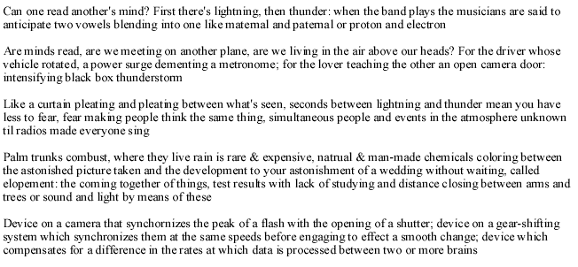

Ange Mlinko
WORKING NOTE by Ange Mlinko
When Paul Valery challenged Andre Breton to explain why he wrote poetry, Breton replied that he was looking to recapture states of mind that previous poems–by other poets–had put him in. And so with me: how can that feeling–dare I name it, euphoria–be recaptured? The means by which a poem does this keep changing....
How to make a poem rich with reality? And why do I keep defaulting to the dreaming mind? I wrestle with keeping if not two feet, at least one foot on the ground in these poems. Am I really living more fully, am I making relevant discoveries, by continually delving into these dream-like narratives?
What makes a poem really vital (in both senses: most alive, and most important)? I wanted to recapture the old wonder, but I’m more often flustered than euphoric.
FOUR POEMS
Lighter Fluid and Typewriter Grease
Lighter Fluid and Typewriter Grease
My graffiti
flunks me from Shakespeare’s party; walked home
by accomplices, colleagues through the quills and firs
shadowed by stoners like guy wires, they don't remember Christopher
til he shows off his tattoos, likewise the circles
under the billboards at the dealership–we ask,
"Have I any knowledge, do I make any sense or multiply sensation?
Must I continue to rely on daimons?" Ryan leaves the group
to get her visa renewed in the Spanish protectorate. Steve jumps up
and joins a bonfire guitarist. "These aren't autobiography
but they're not entirely unconditional either." Last call
a hose blast on a trash can, and as the U.S. charts bomb the waitress
is our witness, the placemat’s puzzles devolve into contests
of who can see the words for the forest. The horizon
is getting lighter now and as a toolbox overturns the sky’s
full of gulls, ferry at the dock waiting for a passenger,
I say, "Is this what's next?" and all demur. What's to love?
The flags with their stars, the man asleep at the oars?
Making circles with them we reach the other shore.
A painting or a stenciling of a scene on the window
of men on horses coursing through some desolate meadow
bare staves of trees, snow, bundled figures looking fearful
–consulting–as they land, aslant, bending their hardhats
to earth; and easily chipped as a rim, a hoof.
Through the stencil the real December, chimneysmoke,
an evergreen around which a town grew to schedule
like bakers to dawn. And thinking of Gilles defenestrating
when looking out the window is so commonly fraught with detachment!
Like rivets outlasting your jacket, the airplane skin
remains stitched in rags, your dreamlife more fragile than flight
or glasses on your pillow every night; and still you'd blame me
for the last leg in the high cab with the trucker who doesn’t speak
English!
Oh stay with me a little while longer, nurse another stout
closer and closer to the beauty of the middle-aged, keeping
alive the love of beer over sleeping.
Are you
scared to die? If the answer is
a) No, skip to the end of the poem; if b)
Transformer station amid receptive cacti
When the air compresses & rocks the whole housing
Octopus-undersides, satellite dishes
Call your brother & compact the bill
Dynamiting little hibiscus almost like Christmas
Causal cell phones all business
Down by the consulates and banks
To get a signature guaranteed
For all time forwards & backwards
Expanding the guest list to include
The group home schizos like communicating bakeries
Though the universe folds its arms around you
Though the whole universe unfolds its arms to embrace you
Though the galaxy takes two arms of its own to hold you
No I didn't get any sleep last night
French language New York cop shows
Algerian TV all loneliness in the banlieues
Spanish adventure movies from the seventies
Emptying new trash into the sublime where we fish
As Halloween democratizing Cleopatra's wig
Falls on a pumpkin, my brown hair

Like rear
window defoggers laid down in strips of tape
then stripping them leaving the wires like stripes
shook off a flag, many bridges of lit up bulbs
erased the actual bridges.
We walked
around the railings
counting lifeboats chalked across the deck
where rope was lustily looped with the elbow
by men who say, "That's not for men!"
Oh yeah?
It's like hunting with your aunt! in the park!
Your heroes' horses lurk in absurd modes
balancing through time and grown beyond by trees alone.
From secondhand
to costume shop
your footprints stitched into a history walk.
In prison, joking
two champagne glasses in the armoire, no champagne...
All things
locked
in a boot of ice like a police boot on a growing branch
For if you
don't take
the splinter out it enters the bloodstream and goes to the heart
which bursts at a thought:
Paris! The medical supplies salesman stares...
BIO: Ange Mlinko lives in Brooklyn after living in Boston, Providence, and the kingdom of Morocco. Her book Matinees was published by Zoland Books in 1999.